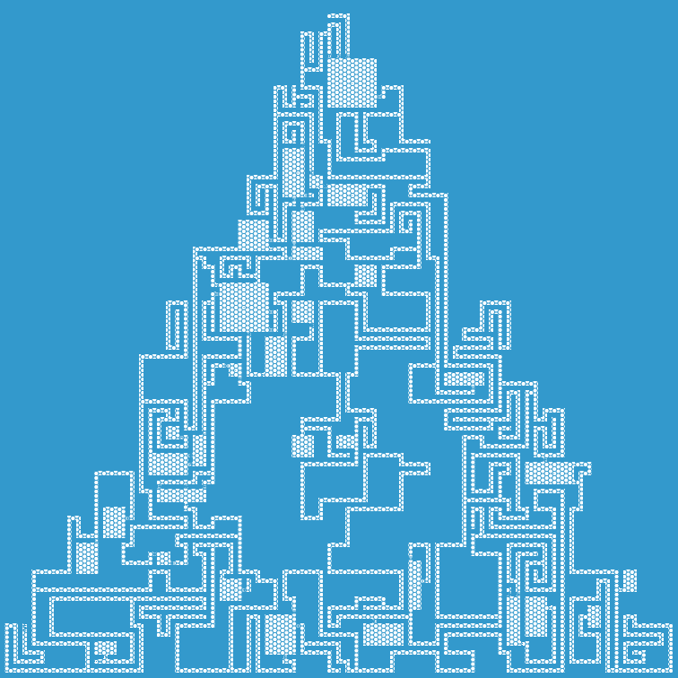

New announcements

I'm excited to announce a few things! First: Our Dungeon Generator has arrived at version 1.0. We've still got 40 different issues/features we want to work though but for the most part things work as intended and the generator accomplishes it's stated aims.
Second: Celti and Eric B. Smith have graciously hosted our project at the following sites:
- https://dungeon.celti.name/
- http://gurpsland.no-ip.org/#Dungeon
Third: We have a forum thread over at SJGames's forums where you can now provide feedback as well as the Github page, here or by pinging me (Zuljita#7010) over at Mook's Discord Server.
Fourth: We've been working away at testing our dungeons as we go and fixing things as we spot them. Most recently, we've spotted some issues with wandering monster variability that needed fixing, we've added the option for a random travel time, and we've added biomes for survival during your trip to the dungeon.